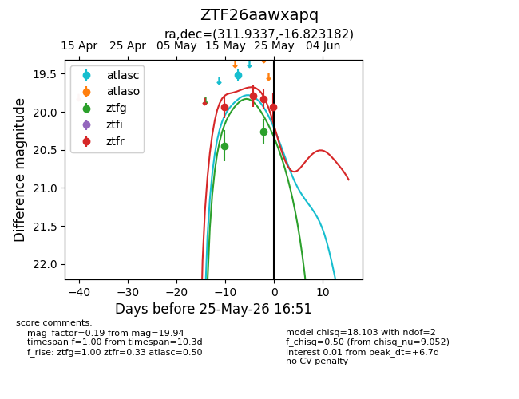
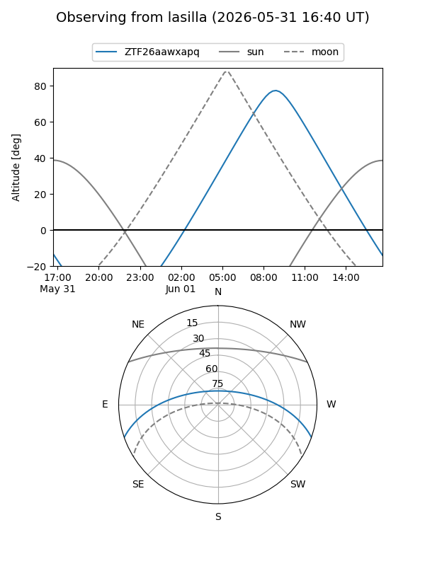
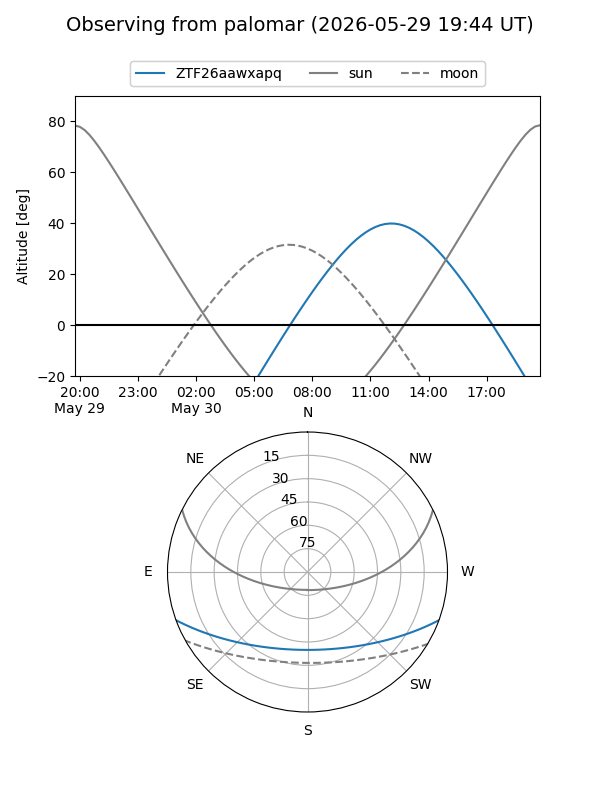
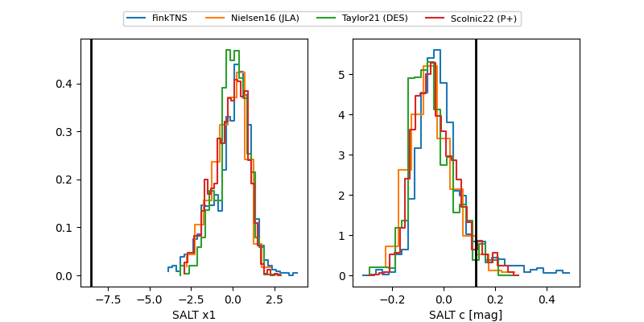

ZTF26aawxapq
Target ZTF26aawxapq at 2026-05-25 16:53
Aliases and brokers:
lsst-FINK: link
lsst-Lasair: link
lsst-ALeRCE: link
ztf-FINK: link
ztf-Lasair: link
ztf-ALeRCE: link
alt names
ZTF26aawxapq (ztf,fink_ztf)
Coordinates:
equatorial (ra, dec) = 311.9337,-16.82318
equatorial (HMS+DMS) = 20:47:44.08,-16:49:23.45
galactic (l, b) = (29.8201,-33.08917)
Flags:
Photometry:
last atlasc=19.52, ztfg=20.26, ztfr=19.94
1 atlasc, 2 ztfg, 4 ztfr detections
Lightcurve

Visibility


Additional plots
